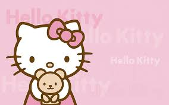
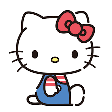

自我簡介

大家好，我是 HELLO KITTY！ 我住在英國倫敦郊外，是一個開朗又溫柔的小女孩。我最喜歡做甜點、彈鋼琴，還有和家人朋友一起分享快樂時光。我的招牌紅色蝴蝶結象徵著友誼與愛心。

我相信只要保持善良與真誠，每一天都可以變得更美好。希望能把笑容與幸福帶給每一個人 💗
最新消息

酷洛米
來自三麗鷗（Sanrio）。 外型特徵是黑色小惡魔帽，上面有粉紅色骷髏頭標誌。 個性有點叛逆、調皮，但其實內心細膩。 給人酷酷、帶點反差萌的感覺。

美樂蒂
來自三麗鷗（Sanrio）。 特色是粉紅色（有時紅色）頭巾兔子造型。 個性溫柔、天真又善良。 給人甜美可愛、療癒的印象。

Hello Kitty
三麗鷗最具代表性的角色。 白色小貓，左耳戴紅色蝴蝶結。 個性開朗、友善、喜歡交朋友。 是全球知名的經典卡通人物。

帕恰狗
來自三麗鷗（Sanrio）。 外型是白色小狗，黑色長耳朵。 個性活潑開朗，喜歡運動。 給人陽光、可愛又有活力的感覺。